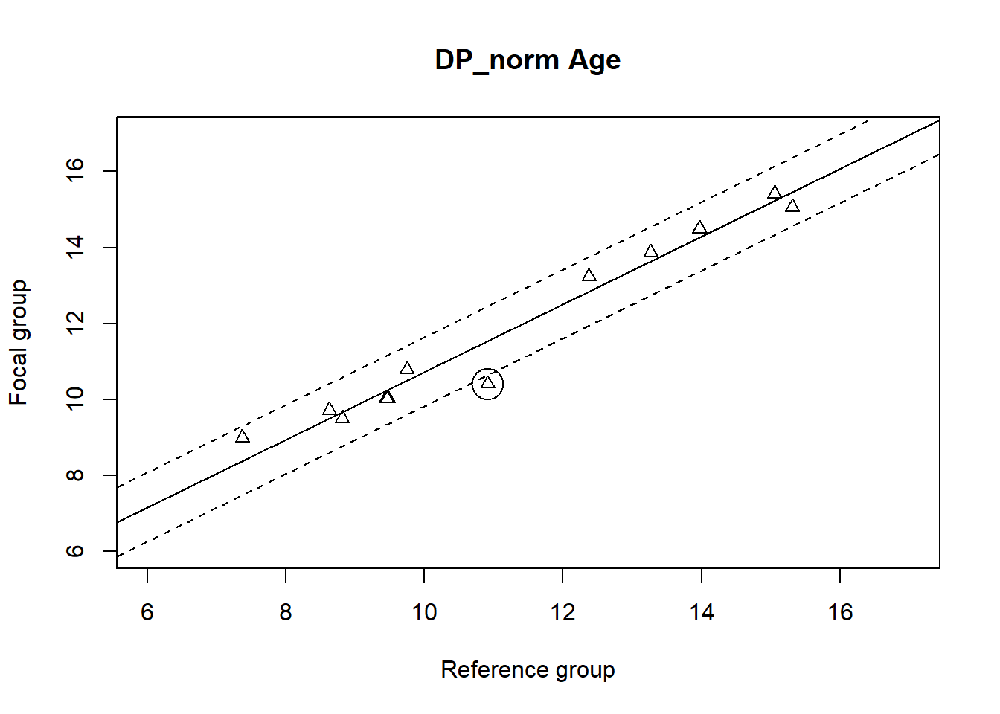
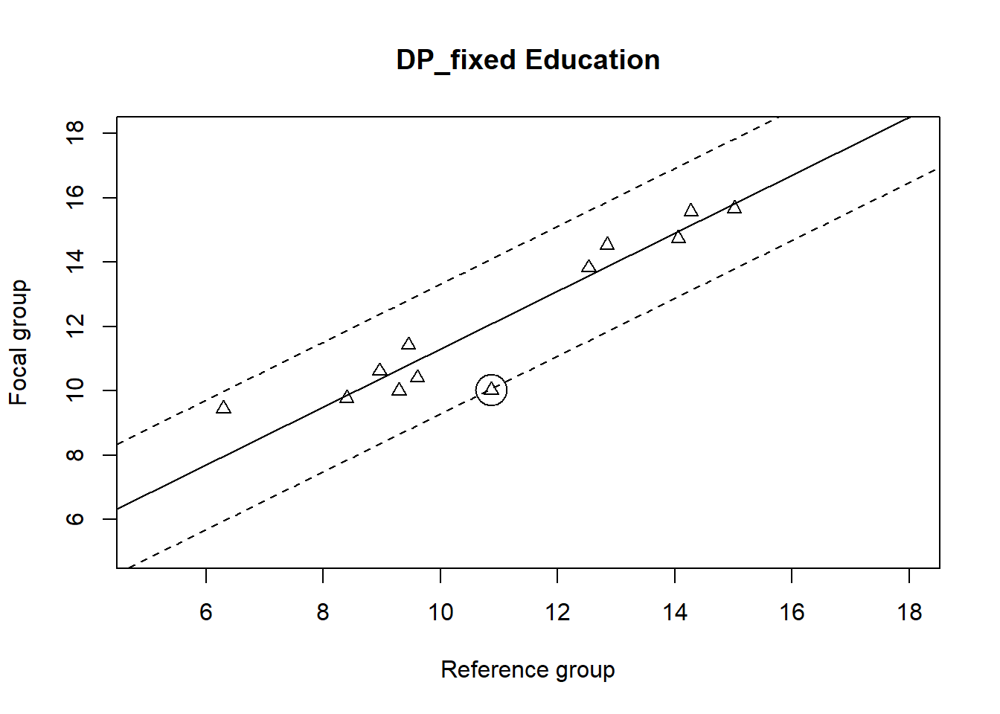
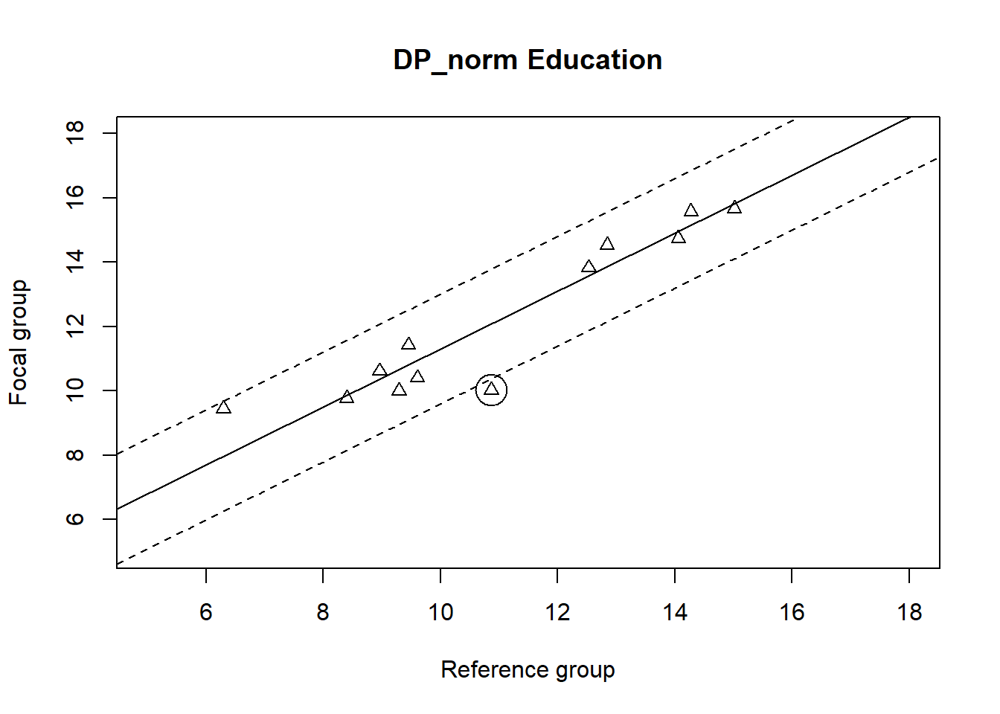
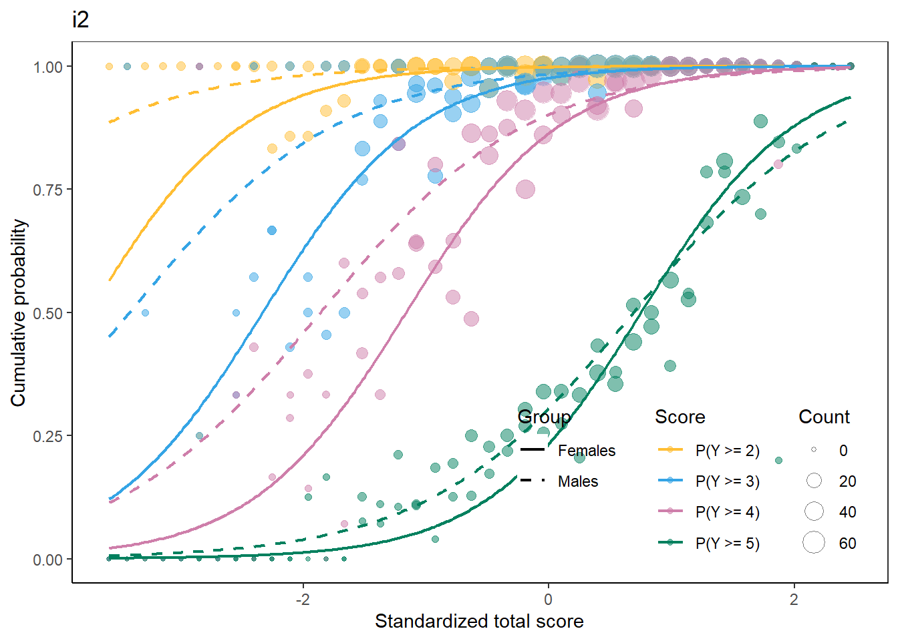
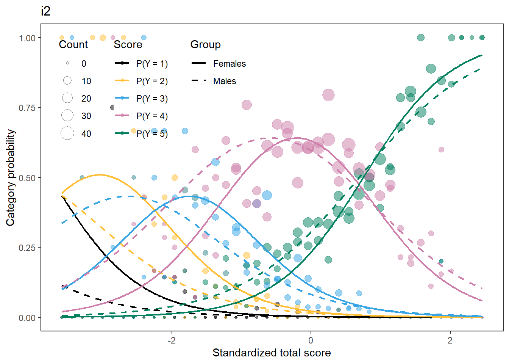

Note: The assignment is due on December 20, 2021. Send your code and html/pdf report to dlouha@cs.cas.cz (and to martinkova@cs.cas.cz in copy).
I am working with the BFI2 dataset from the ShinyItemAnalysis package. The BFI2 dataset contains responses of \(1733\) Czech respondents to the Big Five Inventory 2, as well as information about their age, education, and gender. The BFI2 items are scored using a 5-point Likert scale.
library(deltaPlotR)
library(difNLR)
library(difR)
library(ggplot2)
library(ltm)
library(mirt)
library(ShinyItemAnalysis)
library(cowplot)
library(Cairo)
library(dplyr)
data(BFI2, package='ShinyItemAnalysis')
# Data frame for agreeableness domain
BFI2_a <- BFI2[, seq(2, 57, 5)]
BFI2_a <- cbind(BFI2_a, BFI2[61:63])
BFI2_a <- BFI2_a %>%
mutate(total_score = rowSums(BFI2_a[1:12]))I created a data frame for the agreeability domain, which I’m going to be working with in this assignment.
DIF analysis is important in test validation, because it takes into account that groups may differ in overall ability and allows us to examine potential differences on the level of individual items. It can uncover unfair items or in case of tests that are meant to function differently for different groups, confirm their instructional sensitivity.
There are three variables that could technically be used for DIF testing – gender, age (converted to age groups) and education.
# Gender
BFI2_a$Gender <- factor(BFI2_a$Gender, levels = c(0,1), labels = c("Female", "Male"))
table(BFI2_a$Gender)##
## Female Male
## 1003 730tapply(BFI2_a$total_score, BFI2_a$Gender, summary)## $Female
## Min. 1st Qu. Median Mean 3rd Qu. Max.
## 20.0 40.0 45.0 44.3 49.0 60.0
##
## $Male
## Min. 1st Qu. Median Mean 3rd Qu. Max.
## 19.00 37.00 42.00 41.95 47.00 60.00# Age
summary(BFI2_a$Age)## Min. 1st Qu. Median Mean 3rd Qu. Max.
## 15.00 18.00 20.00 20.06 22.00 26.00BFI2_a$Age <- factor(dplyr::case_when(BFI2_a$Age <= 20 ~ '15-20',
TRUE ~ '21-26'))
table(BFI2_a$Age)##
## 15-20 21-26
## 1055 678tapply(BFI2_a$total_score, BFI2_a$Age, summary)## $`15-20`
## Min. 1st Qu. Median Mean 3rd Qu. Max.
## 20.00 39.00 43.00 42.82 48.00 60.00
##
## $`21-26`
## Min. 1st Qu. Median Mean 3rd Qu. Max.
## 19.00 40.00 45.00 44.07 49.00 60.00# Education
BFI2_a$Educ <- factor(dplyr::case_when(BFI2_a$Educ <= 4 ~ "Secondary",
BFI2_a$Educ > 4 ~ "Tertiary"))
summary(BFI2_a$Educ)## Secondary Tertiary NA's
## 531 192 1010tapply(BFI2_a$total_score, BFI2_a$Educ, summary)## $Secondary
## Min. 1st Qu. Median Mean 3rd Qu. Max.
## 20.00 38.00 42.00 41.85 47.00 57.00
##
## $Tertiary
## Min. 1st Qu. Median Mean 3rd Qu. Max.
## 23.00 40.00 45.00 44.64 50.00 60.00There are \(1003\) women and \(730\) men in the `BFI2´ dataset. As can be seen in the summary statistic, the total agreeability scores seem slightly different for male and female participants with female participants scoring higher in agreeability (= \(44.3\)) than their male counterparts (= \(41.95\)).
When it comes to age, the ´BFI2´ sample is rather homogeneous with all participants being 15 to 26 years old. I divided participants into two groups – 15-20 (N = \(1055\)) and 21-26 (N = \(678\)) years old. The summary statistic shows, that the observed agreeability is a bit different for age groups with younger participants scoring (on average) lower (= \(42.82\)) than older participants (= \(44.07\)).
The Educ variable has quite a lot of missing values (NA = \(1010\)). Nonetheless, I divided participants into two groups based on education level (secondary or tertiary). The observed ability in both groups is, again, slightly different with participants with tertiary education scoring higher (= \(44.64\)) than participants with secondary education (= \(41.85\)).
I binarized my data and tried computing Delta plots for all the above mentioned grouping variables.
# Binarize data
bin <- function(x) {
ifelse(x %in% 4:5, 1, 0)
}
BFI2_a_bin <- data.frame(lapply(BFI2_a[1:12], bin))
# Gender
BFI2_a_binG <- BFI2_a_bin %>%
mutate(Gender = BFI2_a$Gender)
# Delta plot with fixed threshold
(DP_fixed <- deltaPlotR::deltaPlot(data = BFI2_a_binG, group = "Gender",
focal.name = "Female", thr = 1.5))##
## Detection of Differential Item Functioning using Angoff's Delta method
## without item purification
##
## Extreme proportions adjusted by constraining to [0.001; 0.999]
##
## Statistics:
##
## Prop.Ref Prop.Foc Delta.Ref Delta.Foc Dist.
## Item1 0.7370 0.8903 10.4637 8.0869 0.7866
## Item2 0.8055 0.8325 9.5546 9.1436 -0.5940
## Item3 0.3438 0.3958 14.6081 14.0568 -0.0461
## Item4 0.7164 0.8385 10.7108 9.0470 0.3379
## Item5 0.6986 0.7737 10.9181 9.9959 -0.1334
## Item6 0.7055 0.7388 10.8391 10.4416 -0.4872
## Item7 0.7178 0.8375 10.6946 9.0633 0.3150
## Item8 0.4000 0.4636 14.0134 13.3654 -0.0357
## Item9 0.2699 0.2961 15.4529 15.1425 -0.1290
## Item10 0.4411 0.5603 13.5928 12.3929 0.2910
## Item11 0.8466 0.8913 8.9126 8.0656 -0.3637
## Item12 0.2658 0.3161 15.5028 14.9151 0.0587
##
## Code: '***' if item is flagged as DIF
##
## Parameters of the major axis:
##
## a b
## -2.6129 1.1364
##
## Detection threshold: 1.5
##
## Items detected as DIF items: no DIF item detected
##
## Output was not captured!# Delta plot with normal approximation threshold
(DP_norm <- deltaPlotR::deltaPlot(data = BFI2_a_binG, group = "Gender",
focal.name = "Female", thr = "norm"))##
## Detection of Differential Item Functioning using Angoff's Delta method
## without item purification
##
## Extreme proportions adjusted by constraining to [0.001; 0.999]
##
## Statistics:
##
## Prop.Ref Prop.Foc Delta.Ref Delta.Foc Dist.
## Item1 0.7370 0.8903 10.4637 8.0869 0.7866 ***
## Item2 0.8055 0.8325 9.5546 9.1436 -0.5940
## Item3 0.3438 0.3958 14.6081 14.0568 -0.0461
## Item4 0.7164 0.8385 10.7108 9.0470 0.3379
## Item5 0.6986 0.7737 10.9181 9.9959 -0.1334
## Item6 0.7055 0.7388 10.8391 10.4416 -0.4872
## Item7 0.7178 0.8375 10.6946 9.0633 0.3150
## Item8 0.4000 0.4636 14.0134 13.3654 -0.0357
## Item9 0.2699 0.2961 15.4529 15.1425 -0.1290
## Item10 0.4411 0.5603 13.5928 12.3929 0.2910
## Item11 0.8466 0.8913 8.9126 8.0656 -0.3637
## Item12 0.2658 0.3161 15.5028 14.9151 0.0587
##
## Code: '***' if item is flagged as DIF
##
## Parameters of the major axis:
##
## a b
## -2.6129 1.1364
##
## Detection threshold: 0.7661 (significance level: 5%)
##
## Items detected as DIF items:
##
## Item1
##
## Output was not captured!# Age
BFI2_a_binA <- BFI2_a_bin %>%
mutate(Age = BFI2_a$Age)
# Delta plot with fixed threshold
(DP_fixed <- deltaPlotR::deltaPlot(data = BFI2_a_binA, group = "Age",
focal.name = "15-20", thr = 1.5))##
## Detection of Differential Item Functioning using Angoff's Delta method
## without item purification
##
## Extreme proportions adjusted by constraining to [0.001; 0.999]
##
## Statistics:
##
## Prop.Ref Prop.Foc Delta.Ref Delta.Foc Dist.
## Item1 0.8525 0.8085 8.8110 9.5100 0.1202
## Item2 0.8628 0.7943 8.6275 9.7141 -0.1543
## Item3 0.4041 0.3545 13.9707 14.4928 -0.1689
## Item4 0.8112 0.7716 9.4706 10.0240 0.1751
## Item5 0.7920 0.7100 9.7460 10.7870 -0.2115
## Item6 0.6991 0.7412 10.9126 10.4114 0.8449
## Item7 0.8127 0.7706 9.4487 10.0365 0.1512
## Item8 0.4735 0.4133 13.2664 13.8766 -0.1772
## Item9 0.3038 0.2730 15.0536 15.4152 -0.1374
## Item10 0.5619 0.4768 12.3764 13.2330 -0.2885
## Item11 0.9204 0.8417 7.3702 8.9940 -0.4528
## Item12 0.2817 0.3033 15.3111 15.0595 0.2994
##
## Code: '***' if item is flagged as DIF
##
## Parameters of the major axis:
##
## a b
## 1.823 0.8907
##
## Detection threshold: 1.5
##
## Items detected as DIF items: no DIF item detected
##
## Output was not captured!# Delta plot with normal approximation threshold
(DP_norm <- deltaPlotR::deltaPlot(data = BFI2_a_binA, group = "Age",
focal.name = "15-20", thr = "norm"))##
## Detection of Differential Item Functioning using Angoff's Delta method
## without item purification
##
## Extreme proportions adjusted by constraining to [0.001; 0.999]
##
## Statistics:
##
## Prop.Ref Prop.Foc Delta.Ref Delta.Foc Dist.
## Item1 0.8525 0.8085 8.8110 9.5100 0.1202
## Item2 0.8628 0.7943 8.6275 9.7141 -0.1543
## Item3 0.4041 0.3545 13.9707 14.4928 -0.1689
## Item4 0.8112 0.7716 9.4706 10.0240 0.1751
## Item5 0.7920 0.7100 9.7460 10.7870 -0.2115
## Item6 0.6991 0.7412 10.9126 10.4114 0.8449 ***
## Item7 0.8127 0.7706 9.4487 10.0365 0.1512
## Item8 0.4735 0.4133 13.2664 13.8766 -0.1772
## Item9 0.3038 0.2730 15.0536 15.4152 -0.1374
## Item10 0.5619 0.4768 12.3764 13.2330 -0.2885
## Item11 0.9204 0.8417 7.3702 8.9940 -0.4528
## Item12 0.2817 0.3033 15.3111 15.0595 0.2994
##
## Code: '***' if item is flagged as DIF
##
## Parameters of the major axis:
##
## a b
## 1.823 0.8907
##
## Detection threshold: 0.6756 (significance level: 5%)
##
## Items detected as DIF items:
##
## Item6
##
## Output was not captured!deltaPlotR::diagPlot(DP_norm, thr.draw = TRUE, main ="DP_norm Age")
## The plot was not captured!# Education
BFI2_a_binE <- BFI2_a_bin %>%
mutate(Educ = BFI2_a$Educ)
# Delta plot with fixed threshold
(DP_fixed <- deltaPlotR::deltaPlot(data = BFI2_a_binE, group = "Educ",
focal.name = "Secondary", thr = 1.5))##
## Detection of Differential Item Functioning using Angoff's Delta method
## without item purification
##
## Extreme proportions adjusted by constraining to [0.001; 0.999]
##
## Statistics:
##
## Prop.Ref Prop.Foc Delta.Ref Delta.Foc Dist.
## Item1 0.8750 0.7910 8.3986 9.7610 0.0686
## Item2 0.8438 0.7250 8.9600 10.6084 -0.1853
## Item3 0.3958 0.3315 14.0566 14.7437 0.1533
## Item4 0.8229 0.7740 9.2938 9.9915 0.4965
## Item5 0.8125 0.6535 9.4514 11.4210 -0.4602
## Item6 0.7031 0.7721 10.8664 10.0165 1.5304 ***
## Item7 0.8021 0.7420 9.6037 10.4020 0.3989
## Item8 0.5156 0.3503 12.8433 14.5382 -0.5061
## Item9 0.3073 0.2524 15.0142 15.6684 0.1072
## Item10 0.5469 0.4181 12.5289 13.8272 -0.1882
## Item11 0.9531 0.8136 6.2962 9.4356 -1.0968
## Item12 0.3750 0.2599 14.2746 15.5748 -0.3183
##
## Code: '***' if item is flagged as DIF
##
## Parameters of the major axis:
##
## a b
## 2.2878 0.9008
##
## Detection threshold: 1.5
##
## Items detected as DIF items:
##
## Item6
##
## Output was not captured!deltaPlotR::diagPlot(DP_fixed, thr.draw = TRUE, main = "DP_fixed Education")
## The plot was not captured!# Delta plot with normal approximation threshold
(DP_norm <- deltaPlotR::deltaPlot(data = BFI2_a_binE, group = "Educ",
focal.name = "Secondary", thr = "norm"))##
## Detection of Differential Item Functioning using Angoff's Delta method
## without item purification
##
## Extreme proportions adjusted by constraining to [0.001; 0.999]
##
## Statistics:
##
## Prop.Ref Prop.Foc Delta.Ref Delta.Foc Dist.
## Item1 0.8750 0.7910 8.3986 9.7610 0.0686
## Item2 0.8438 0.7250 8.9600 10.6084 -0.1853
## Item3 0.3958 0.3315 14.0566 14.7437 0.1533
## Item4 0.8229 0.7740 9.2938 9.9915 0.4965
## Item5 0.8125 0.6535 9.4514 11.4210 -0.4602
## Item6 0.7031 0.7721 10.8664 10.0165 1.5304 ***
## Item7 0.8021 0.7420 9.6037 10.4020 0.3989
## Item8 0.5156 0.3503 12.8433 14.5382 -0.5061
## Item9 0.3073 0.2524 15.0142 15.6684 0.1072
## Item10 0.5469 0.4181 12.5289 13.8272 -0.1882
## Item11 0.9531 0.8136 6.2962 9.4356 -1.0968
## Item12 0.3750 0.2599 14.2746 15.5748 -0.3183
##
## Code: '***' if item is flagged as DIF
##
## Parameters of the major axis:
##
## a b
## 2.2878 0.9008
##
## Detection threshold: 1.2715 (significance level: 5%)
##
## Items detected as DIF items:
##
## Item6
##
## Output was not captured!deltaPlotR::diagPlot(DP_norm, thr.draw = TRUE, main = "DP_norm Education")
## The plot was not captured!While using a fixed threshold and education as a grouping variable, item 6 was detected as functioning differently. When using a threshold based on normal approximation, item 6 was detected as functioning differently with a threshold of \(1.2715\). Item 6 refers to item 27 in the complete inventory, and is phrased as: “Považuji se za někoho, kdo má v povaze odpouštět.”. This item is also detected when using a normal approximation and age as a grouping variable with a threshold of \(0.6756\).
I used the difMH function from the difR package and gender as a grouping variable.
difR::difMH(BFI2_a_binG, group = "Gender", focal.name = "Female")##
## Detection of Differential Item Functioning using Mantel-Haenszel method
## with continuity correction and without item purification
##
## Results based on asymptotic inference
##
## Matching variable: test score
##
## No set of anchor items was provided
##
## No p-value adjustment for multiple comparisons
##
## Mantel-Haenszel Chi-square statistic:
##
## Stat. P-value
## i2 27.4107 0.0000 ***
## i7 7.7294 0.0054 **
## i12 0.9056 0.3413
## i17 4.6415 0.0312 *
## i22 0.0019 0.9652
## i27 4.4994 0.0339 *
## i32 5.2951 0.0214 *
## i37 1.4747 0.2246
## i42 1.7684 0.1836
## i47 1.1304 0.2877
## i52 0.5683 0.4509
## i57 0.0316 0.8589
##
## Signif. codes: 0 '***' 0.001 '**' 0.01 '*' 0.05 '.' 0.1 ' ' 1
##
## Detection threshold: 3.8415 (significance level: 0.05)
##
## Items detected as DIF items:
##
## i2
## i7
## i17
## i27
## i32
##
##
## Effect size (ETS Delta scale):
##
## Effect size code:
## 'A': negligible effect
## 'B': moderate effect
## 'C': large effect
##
## alphaMH deltaMH
## i2 0.4203 2.0368 C
## i7 1.5810 -1.0765 B
## i12 1.1345 -0.2964 A
## i17 0.7108 0.8023 A
## i22 1.0147 -0.0344 A
## i27 1.3245 -0.6604 A
## i32 0.7051 0.8212 A
## i37 1.1736 -0.3761 A
## i42 1.1988 -0.4261 A
## i47 0.8711 0.3242 A
## i52 1.1616 -0.3521 A
## i57 1.0305 -0.0707 A
##
## Effect size codes: 0 'A' 1.0 'B' 1.5 'C'
## (for absolute values of 'deltaMH')
##
## Output was not captured!Using the Mantel-Haenszel test, the following items were detected as functioning differently when grouping by gender: i2, i7, i17, i27, i32. The effect size for item i2 is large (\(2.0368\)), the effect for item i7 is moderate (\(-1.0765\)) and the rest is negligible. On average, the odds of agreeing with item i2 (“Považuji se za někoho, kdo je soucitný, má dobré srdce.”) are about two times higher for females. On average, the odds of with item i7 (“Považuji se za někoho, kdo je uctivý, s ostatními zachází s úctou.”) are higher for males. Both effects could be presumably explained by gender roles and corresponding societal expectations.
Since I’m working with ordinal data, I selected a cumulative logit model.
(fit <- difNLR::difORD(Data = BFI2_a[1:12], group = BFI2_a$Gender, focal.name = "Female", model = "cumulative"))## Detection of both types of Differential Item Functioning
## for ordinal data using cumulative logit regression model
##
## Likelihood-ratio Chi-square statistics
##
## Item purification was not applied
## No p-value adjustment for multiple comparisons
##
## Chisq-value P-value
## i2 32.1825 0.0000 ***
## i7 13.0218 0.0015 **
## i12 0.9161 0.6325
## i17 28.0959 0.0000 ***
## i22 2.4058 0.3003
## i27 3.0764 0.2148
## i32 1.3033 0.5212
## i37 1.5645 0.4574
## i42 14.4755 0.0007 ***
## i47 8.3113 0.0157 *
## i52 4.1293 0.1269
## i57 0.4415 0.8019
##
## Signif. codes: 0 '***' 0.001 '**' 0.01 '*' 0.05 '.' 0.1 ' ' 1
##
## Items detected as DIF items:
## i2
## i7
## i17
## i42
## i47coef(fit, SE = TRUE)$i2## b2 b3 b4 b5 a bDIF2 bDIF3 bDIF4 bDIF5 aDIF
## estimate -3.7465872 -2.3311038 -1.16416728 0.74975066 1.58651128 -1.5532905 -1.0834312 -0.6960751 -0.06076410 -0.3953855
## SE 0.2229763 0.1117726 0.06574045 0.06791423 0.08219925 0.3668848 0.2367521 0.1386163 0.09247543 0.1011679coef(fit, SE = TRUE)$i17## b2 b3 b4 b5 a bDIF2 bDIF3 bDIF4 bDIF5 aDIF
## estimate -3.0814098 -1.6875929 -0.92608243 0.74679893 1.68770036 -0.7152242 -0.5304063 -0.42943115 -0.20760966 -0.1975868
## SE 0.1525441 0.0791357 0.05600347 0.06413846 0.08327597 0.2278495 0.1363454 0.09277368 0.08003456 0.1022943coef(fit, SE = TRUE)$i42## b2 b3 b4 b5 a bDIF2 bDIF3 bDIF4 bDIF5 aDIF
## estimate -3.2693962 -0.69470825 1.0758525 4.1404094 0.87769432 0.8624647 0.3918807 0.0682697 -0.4918492 0.19629679
## SE 0.2505602 0.09147155 0.1262751 0.3613857 0.06898029 0.2934291 0.1055837 0.1471971 0.3999147 0.09204964plot(fit, item = "i2", plot.type = "cumulative", group.names = c("Females", "Males"))## [[1]]
plot(fit, item = "i2", plot.type = "category", group.names = c("Females", "Males"))## [[1]]
predict(fit, item = "i2", match = 0, group = c(0, 1))predict(fit, item = "i2", match = 0, group = c(0, 1), type = "cumulative")(fit_correc <- difNLR::difORD(Data = BFI2_a[1:12], group = BFI2_a$Gender, focal.name = "Female", model = "cumulative", p.adjust.method = "BH"))## Detection of both types of Differential Item Functioning
## for ordinal data using cumulative logit regression model
##
## Likelihood-ratio Chi-square statistics
##
## Item purification was not applied
## Multiple comparisons made with Benjamini-Hochberg adjustment of p-values
##
## Chisq-value P-value Adj. P-value
## i2 32.1825 0.0000 0.0000 ***
## i7 13.0218 0.0015 0.0045 **
## i12 0.9161 0.6325 0.6900
## i17 28.0959 0.0000 0.0000 ***
## i22 2.4058 0.3003 0.4505
## i27 3.0764 0.2148 0.3682
## i32 1.3033 0.5212 0.6254
## i37 1.5645 0.4574 0.6098
## i42 14.4755 0.0007 0.0029 **
## i47 8.3113 0.0157 0.0376 *
## i52 4.1293 0.1269 0.2537
## i57 0.4415 0.8019 0.8019
##
## Signif. codes: 0 '***' 0.001 '**' 0.01 '*' 0.05 '.' 0.1 ' ' 1
##
## Items detected as DIF items:
## i2
## i7
## i17
## i42
## i47Items 2, 7, 17, 42 a 47 were detected as functioning differently based on gender. In order to at least agree a little with item 2 (“Považuji se za někoho, kdo je soucitný, má dobré srdce.”) with a 50% probability, male respondents were estimated to have a standardized total score of \(-1.16\), while a somewhat lower standardized total score (\(-1.86\)) was sufficient for female respondents. A similar trend can be observed with item 17 (reversed - “Považuji se za někoho, kdo s ostatními příliš nesoucítí.), which makes sense given the wording of the two items. Item 42 on the other hand slightly favors male respondents, who, in order to at least agree a little bit with the statement ”Považuji se za někoho, kdo je vůči záměrům ostatních nedůvěřivý.” (reversed) with a 50% probability, were estimated to have a standardized total score of \(1.08\). Female respondents were estimated to have a slightly higher total score of \(1.15\). A male respondent with an average agreeability score has a 60% probability of seeing himself at least somewhat as someone who is sympathetic, while a female respondent has a probability of 63%. With the Bejamini-Hochberg correction, the detected items remain the same, but the p-value of item 42 is now only below the threshold \(0.001\).
I fit a 2PL model for both genders.
(fit_irt0 <- difR::itemParEst(BFI2_a_binG[BFI2_a_binG$Gender == "Female", 1:12], model = "2PL"))## a b se(a) se(b) cov(a,b)
## i2 1.8012216 -1.7073276 0.2181294 0.12821557 0.022666244
## i7 1.5997506 -1.4134223 0.1745893 0.10951154 0.014651181
## i12 0.9858421 0.5146409 0.1105465 0.08887832 -0.004611976
## i17 2.0134590 -1.3004931 0.2261906 0.09073321 0.014714671
## i22 1.6451352 -1.0815832 0.1710193 0.08680723 0.010049405
## i27 0.8988985 -1.3451550 0.1088984 0.15352685 0.013428844
## i32 1.6652964 -1.4139569 0.1828755 0.10741192 0.014989953
## i37 1.4823131 0.1358068 0.1458812 0.06048586 -0.001179499
## i42 0.8487375 1.1727302 0.1073817 0.14755097 -0.012326562
## i47 1.4950920 -0.2304477 0.1471051 0.06100996 0.001772618
## i52 1.6661201 -1.7829683 0.1991625 0.13892218 0.022801478
## i57 0.7277846 1.1816814 0.1000997 0.16822676 -0.013295505(fit_irt1 <- difR::itemParEst(BFI2_a_binG[BFI2_a_binG$Gender == "Male", 1:12], model = "2PL"))## a b se(a) se(b) cov(a,b)
## i2 2.5465719 -0.7806449 0.3212051 0.06768496 0.010299075
## i7 1.7458408 -1.2099682 0.2144570 0.10539996 0.015897537
## i12 0.9225102 0.8208913 0.1188522 0.12737666 -0.009548499
## i17 2.5646533 -0.7067203 0.3164328 0.06461972 0.008592412
## i22 0.9936780 -1.0185922 0.1287798 0.13373409 0.012019123
## i27 1.1077210 -0.9826202 0.1361838 0.12012876 0.010965291
## i32 1.7262627 -0.8201643 0.1938077 0.08203460 0.008557485
## i37 1.1507745 0.4375248 0.1340367 0.09024047 -0.004833339
## i42 0.7207532 1.5323198 0.1131038 0.23559881 -0.022441671
## i47 1.4271710 0.2169368 0.1552811 0.07367495 -0.002478105
## i52 1.9701019 -1.3564900 0.2561419 0.11045292 0.020719451
## i57 0.7964208 1.4434577 0.1184676 0.20765385 -0.020276224As we can see, discrimination and difficulty of item 2 are very different for males and females. Most items were easier for females, item 42 and 47 are an exception.
Your text (description of methods).
Your text.